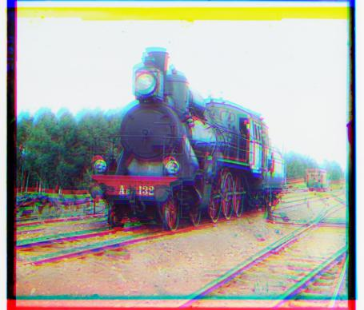
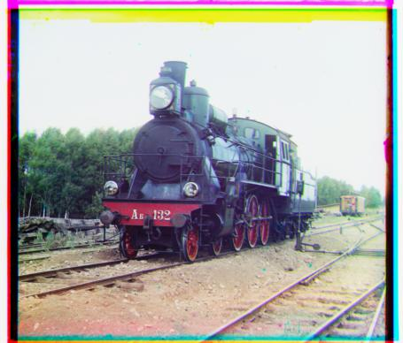
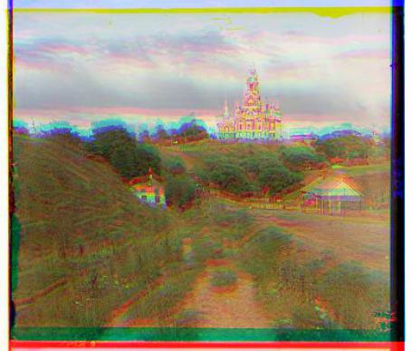
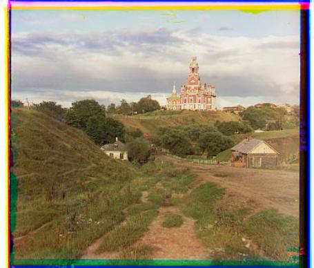
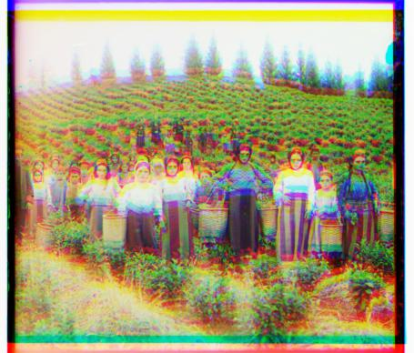
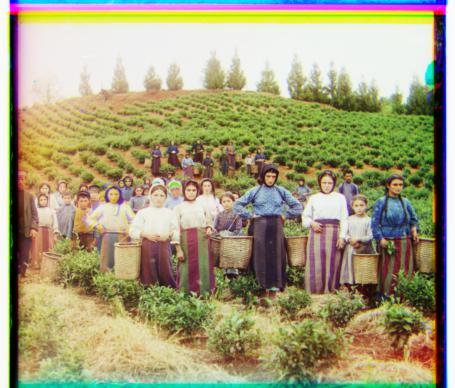

Programming Project
Due Date: September 9th, 2024 at 11:59PM
In this project, we utilize image processing techniques to restore and colorize the digitized photos taken by Sergei Mikhailovich Prokudin-Gorskii (1863-1944), a pioneering photographer in early color photography. The goal is to align the three color channels (Red, Green, and Blue) from his glass plate negatives to produce a cohesive and visually accurate color image.
Initially, I used Euclidean Distance as described in the project documentation to align the three color channels. However, this method did not yield satisfactory results. After experimenting with different approaches, I replaced the Euclidean Distance with the Structural Similarity (SSIM) Index, which compares the structural information of two images rather than just pixel-wise differences. This resulted in much more accurate alignment, significantly improving the final image quality.
For handling larger images more efficiently, I implemented a recursive function to construct an
image pyramid. By scaling down the image and aligning the smaller version first, the algorithm
was able to refine the alignment as the image size increased. This hierarchical approach allowed
the program to align large images much faster compared to exhaustive search across the original
resolution.
For example, when aligning the largest image, self_portrait.tif, without using the image pyramid,
the runtime exceeded 20 minutes and the alignment was incomplete. However, with the image pyramid, the alignment
was completed in just over two minutes, and the result was much more accurate.
One common issue with colorized images is misalignment at the borders, which often results in unwanted
artifacts. To address this, I wrote a function that detects rows and columns where most pixels are
either very close to 1 (white) or 0 (black). This function automatically crops the edges that consist
mostly of black or white pixels. While this method works reasonably well, I believe a more efficient
approach might involve cropping the image based on the calculated displacement vectors, rather than
relying solely on pixel intensity.
However, a better approach might be to calculate the average pixel value for each row and column.
If every pixel in a row or column is close to the average value, we could crop that row or column,
as this would indicate that the row/column shares the same color.
Click here to view Project 1 details and results.
| Original Image (Media) | Processed Image (Output Media) | Offset |
|---|---|---|
|  |  | green offset: (-2, 40) red offset: (29, 85) |
|  |  | green offset: (2, 5) red offset: (3, 12) |
|  |  | green offset: (14, 59) red offset: (11, 122) |